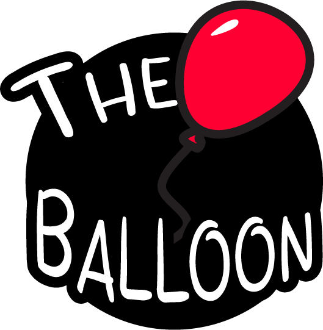
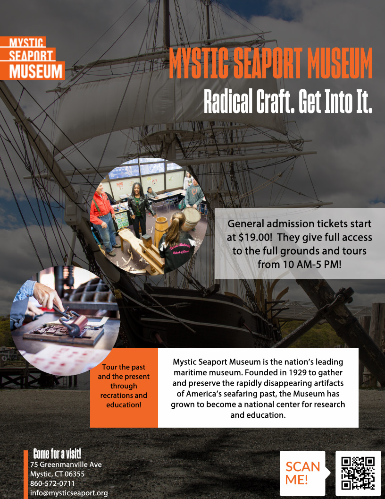
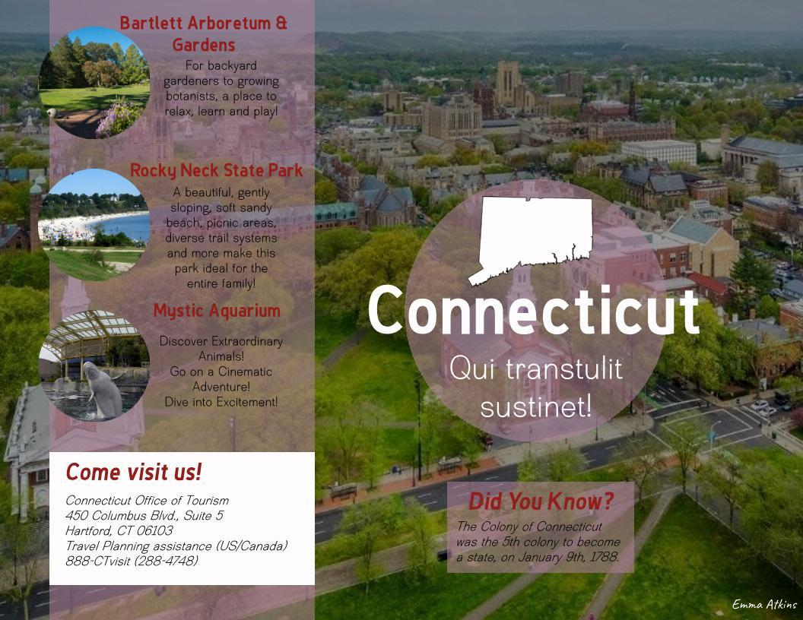

Graphic design, motion graphics, and visual storytelling across print and digital formats

Logo design and animated sting for The Balloon, a live studio pop culture show produced at Appalachian State University. Designed in Illustrator, animated in After Effects.
My Role: Design and animation.
Opening title sequence for The Balloon, played at the top of each episode.
My Role: Design and animation.
Animated poster reveals used in production. Each poster flies onto screen with noise and texture, using worn and glitched edges to give the motion a tactile, analog feel.
My Role: Design and animation.

Type: Promotional Poster | Tools: Google Slides, Adobe Photoshop
A promotional poster for Mystic Seaport Museum combining photography, typography, and information design to create compelling marketing material. The layout balances visual appeal with practical information (hours, admission, location) while maintaining the museum's brand identity. Demonstrates ability to create professional promotional materials for cultural institutions.

Type: Tourism Brochure | Tools: Google Slides, Adobe Photoshop
A tourism brochure showcasing Connecticut attractions with integrated photography, layout design, and copywriting. The design combines drone photography with promotional content to highlight state landmarks and activities. Features clean typography, strategic use of white space, and organized information architecture suitable for print or digital distribution.
A collaborative infographic examining the legislative landscape surrounding LGBTQ+ rights and the tactics of moral panic. Created with Asher Delvecchio and Liz Savage, with myself leading the graphics and visual design work. The piece synthesizes legislative data, community impact statistics, and advocacy framing into a cohesive visual narrative.
View Full Infographic